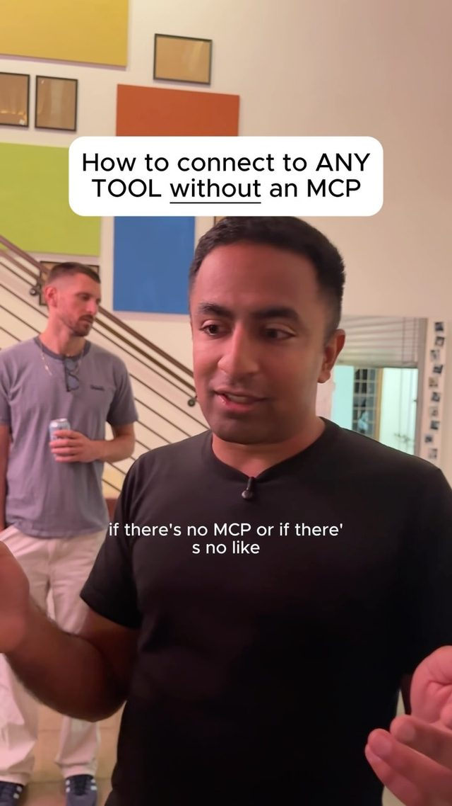
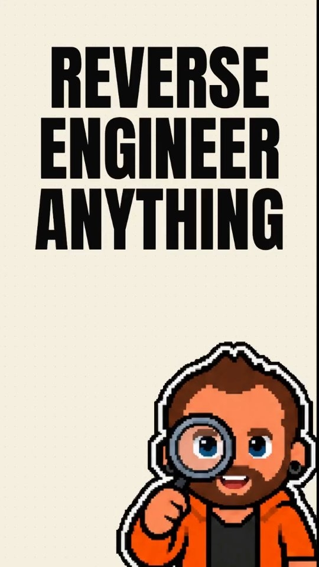
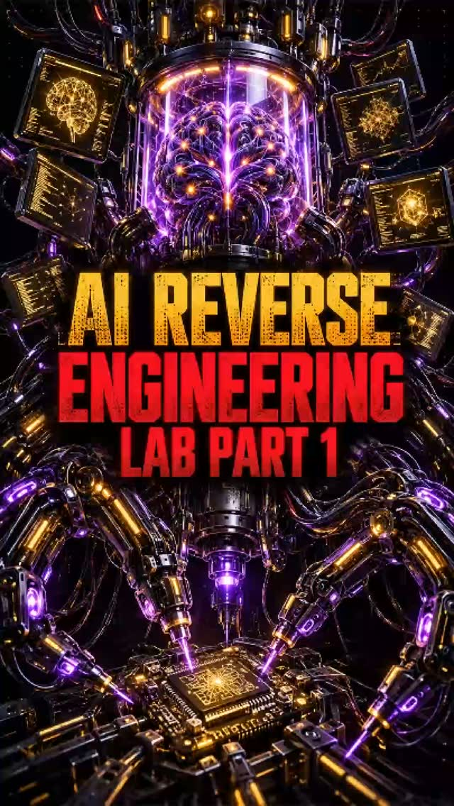
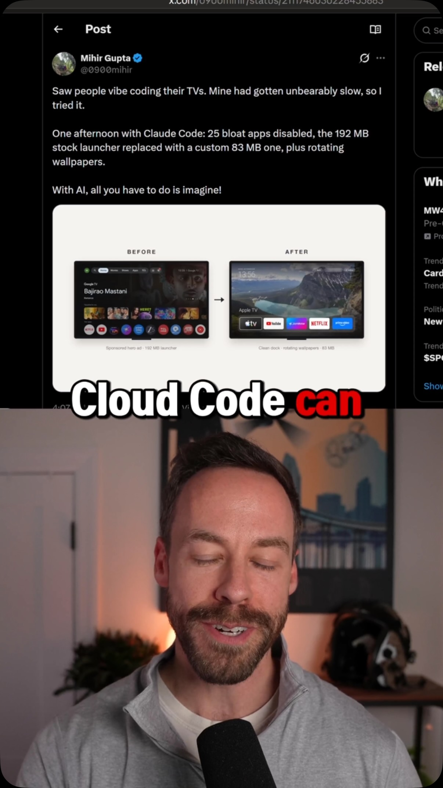
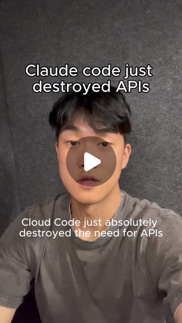
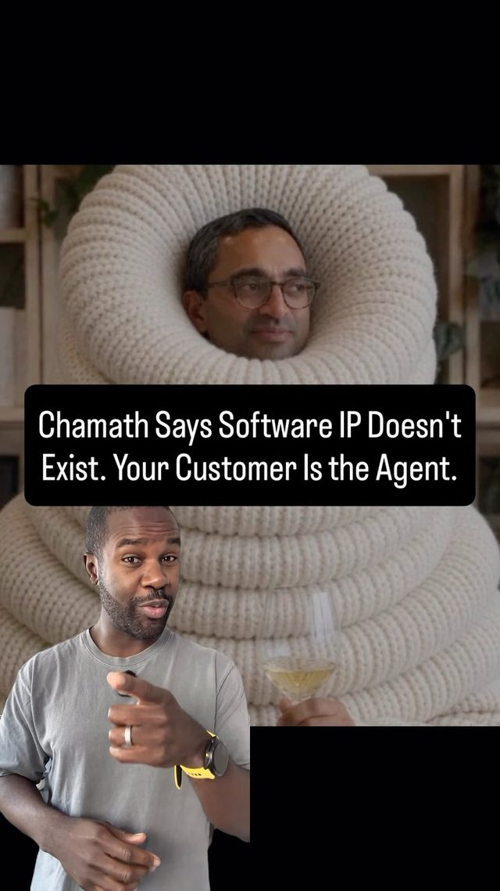
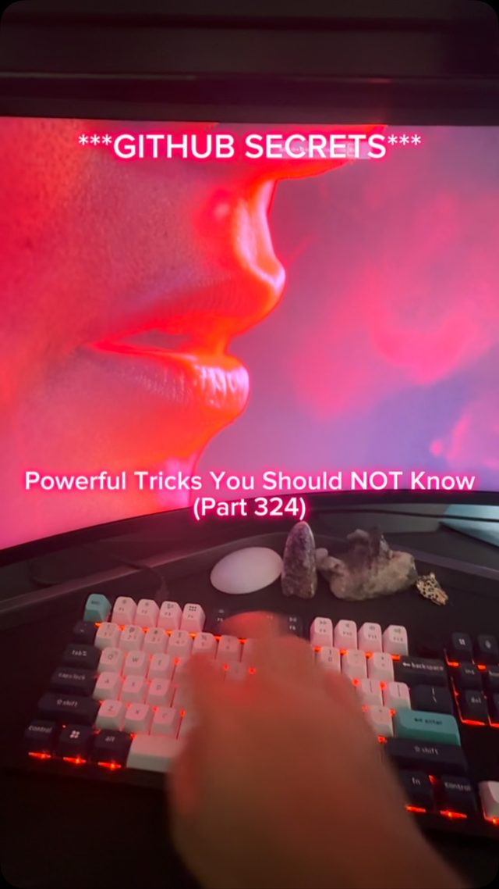
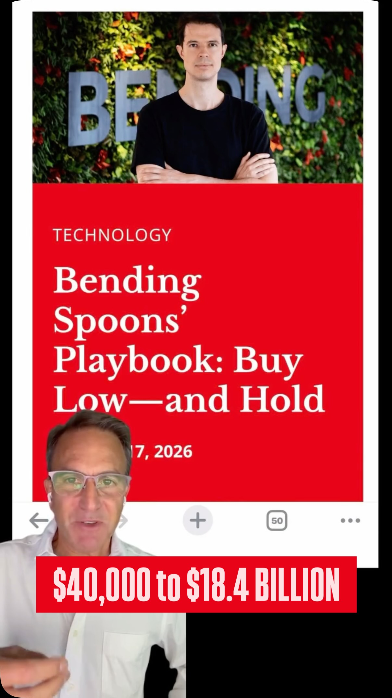
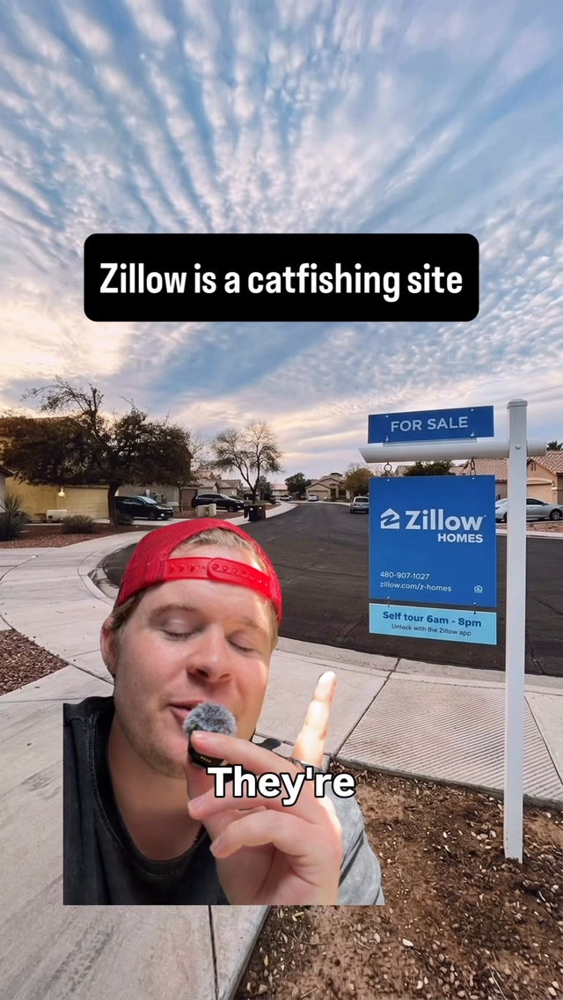

Every App Is Headless Now — agents that build their own control surface
Try It — Action Sketch
Pick one MCP-less desktop tool you or a local business already uses; prompt the agent to 'build yourself a CLI' covering its top 5 actions and log how many need UI automation versus file/DB access For the stubborn actions, run Reverse Engineer Anything (or REA MCP for native binaries) to find the underlying file formats or local endpoints, and replace UI clicks with direct calls Wrap the CLI as an MCP server, run a week of real tasks through it, and price the result as a monthly 'we run it for you' service Falsifier: if the wrapper breaks on more than one vendor update per month, the maintenance cost eats the margin and this is a consulting gig, not an arbitrage
Connected Posts (11)









Prompt system — run this yourself
Pasteable into Claude Code, Claude, or any agent. One-shot for the whole result, step prompts when you want to steer. Every step carries its own audit; the gap audit makes the agent find and fill what it missed.
Mission. Make one legacy tool that you or a client are licensed to use agent-drivable, lawfully, and decide honestly whether wrapping it is an arbitrage or a consulting treadmill. The pieces are an agent-built command-line wrapper covering the tool's top five real actions, each using the most stable lawful mechanism (a documented API or file format before UI automation), wrapped as an MCP server, with a written legal basis per action. Done means every action passes a 50-run reliability replay, survives a simulated vendor update, has its maintenance cost measured, and the falsifier has a verdict: more than one breakage per vendor update per month means it is a consulting gig, not arbitrage.
1 · Deeper, not bigger
- What a top professional would do (that you didn't ask for): A systems-integration engineer would refuse to drive a UI by clicking if a documented interface exists, because clicks are the most brittle and legally fraught path. They would look, in order, for a documented API, an export or import file format, a local database, or a config file, and only fall back to screen automation for the actions that have none. They would get written authorization from the software owner, and they would document the legal basis for each interop method, leaning on the interoperability provisions of copyright law (in the US, the DMCA Section 1201(f) interoperability exception and the idea that interface facts are not themselves protected) rather than assuming it is fine. They would build a regression harness so a breaking vendor update is caught the same day, and measure the breakage rate before pricing a service on it.
- Rawest material to start from: The target tool you are licensed to use: its documentation, its export/import formats, its local database or config files, and its official API if one exists. The vendor's terms of service and your license agreement, which say what automation and interoperability are permitted. The legal texts: the DMCA Section 1201(f) interoperability exception and your jurisdiction's equivalent. For stubborn native binaries, the publicly documented, lawful study of software for interoperability, keeping to clean behavioral reconstruction rather than copying protected code, as @lizthedeveloper lays out (engine re-implementation and functional reconstruction are the defensible routes; shipping recovered original source is not).
- Methods and tools: A tiered interop strategy: documented API first, then file formats (read/write the tool's own export and import), then local DB access (SQLite or similar), then config files, and UI automation only as the last resort for actions with no other path. An agent-built CLI that exposes each action as a subcommand, following @catlabs' 'build yourself a CLI tool to interact with X'. An MCP server wrapping the CLI for discovery and auth. A reliability harness running each action 50 times and recording the success rate. A vendor-update simulation (pin the current version, then test against an updated or mutated interface). gitmcp/gitingest/deepwiki for repo comprehension. A breakage log for the maintenance-cost measurement.
- What proves it right: A 50-run replay per action with a success-rate threshold (for example 98%) that is not met by UI-automation actions as often as by API or file-format actions, which is itself the finding. A vendor-update simulation that the wrapper survives, or does not. A week of real tasks run through the MCP server with a logged error count. A written legal-basis sheet reviewed against the license and the interoperability exception. The pre-registered falsifier: breakage more than once per vendor update per month means the maintenance cost eats the margin and it is a consulting engagement, not an arbitrage.
Rewritten prompt — ask for exactly that:
You are a systems-integration engineer. Make one tool I am licensed to use agent-drivable, lawfully, and tell me whether wrapping it is worth it. 1. First confirm authorization: I am licensed to use the tool, and the license and terms permit automation and interoperability. Write the legal basis down before any code. 2. Enumerate the tool's top five real actions. For each, find the most stable lawful mechanism in this order: documented API, export/import file format, local database, config file, and UI automation only if nothing else exists. Log how many actions need UI automation versus direct data access. 3. Have the agent build a CLI exposing those five actions, then wrap the CLI as an MCP server. 4. Run each action 50 times and record the success rate. Simulate a vendor update and re-test. 5. Run a week of real tasks through it and log every breakage. 6. Pre-register the falsifier: more than one breakage per vendor update per month means this is a consulting gig, not an arbitrage. Price accordingly. Return the CLI, the MCP server, the per-action reliability and legal-basis sheet, and the arbitrage-versus-consulting verdict.
2 · One-shot prompt
ROLE You are a systems-integration engineer who makes licensed software agent-drivable, lawfully, and measures reliability before anyone prices a service on it. You reach for a documented interface before you ever drive a UI. CONTEXT The saved posts describe the opportunity and its guardrail. - @catlabs: when a tool has no MCP, tell the agent 'Build yourself a CLI tool to interact with X'. MCP is best for auth, discovery and distribution; a custom CLI wins for bespoke deep control and uses fewer tokens. Expect security flags. - @theericmichaud and @backsla.sh: 'Reverse Engineer Anything' and an MCP with a Ghidra backend, used to understand how software works and to revive unsupported hardware, 'on software you are authorized to analyze'. - @chase.h.ai: pointing a coding agent at a device on your own network to reconfigure it. - @zchangd and @atlasberry008: the demand - workflows over legacy business software, and Chamath's claim that software IP stops being a moat once services go headless and agents call them via MCP. - @tom__shipley: Bending Spoons buys stagnant software and rebuilds the core lean - the business value of making legacy tools cheap to operate. - @lizthedeveloper: which reconstruction methods stay legal - engine re-implementation and functional reconstruction are defensible; shipping recovered original source is not; comparing behavior gives an automatic test oracle. HARD CONSTRAINTS - Authorization first. Only target software you or your client are licensed to use, and only methods the license and terms permit. Write the legal basis per action before coding. If authorization is unclear, stop and ask. - Stable before brittle. For each action, use a documented API, then a file format, then a local DB, then config, and UI automation only as a last resort. Record which tier each action uses. - Lawful interoperability only. Lean on the DMCA Section 1201(f) interoperability provision and the fact that interface facts are not protected. Do not copy protected code into your output; reconstruct behavior cleanly. - Do not target third-party systems you are not authorized to touch, and do not defeat access controls protecting someone else's data. DELIVERABLES 1. authorization.md: the license and terms clauses permitting automation and interoperability, and a legal-basis line per action. 2. actions.md: the top five real actions, and for each the chosen interop tier (API, file, DB, config, UI) with why. 3. cli/: the agent-built command-line wrapper, one subcommand per action. 4. mcp/: the CLI wrapped as an MCP server for auth and discovery. 5. reliability.csv: 50 runs per action, success rate, and a vendor-update simulation result. 6. maintenance.md: a week of real tasks, the breakage log, and the cost estimate. 7. report.md with the arbitrage-versus-consulting verdict. BUILT-IN GAP ANALYSIS List actions that only work via brittle UI automation, actions whose legal basis is uncertain, interfaces you could not find documentation for, and reliability numbers below threshold. Fill what you can: find the file format, read the docs. Mark the rest UNFILLED. SELF-QUESTIONS Is every action on something I am licensed to automate? How many actions need UI clicking versus data access? Would a vendor update break this? Is the maintenance cost under the falsifier threshold? STOP Stop when the five actions are wrapped, replayed 50 times each, and survive (or fail) the update simulation. Stop and ask if authorization for any action is unclear, or if the only path defeats an access control. RETURN Return authorization.md, actions.md, cli/, mcp/, reliability.csv, maintenance.md and report.md with the sections Authorization, Actions, Reliability, Maintenance, Verdict and Gaps.
3 · Step-by-step prompts
Step 1 — Confirm authorization and write the legal basis
Goal: Establish that the tool and the methods are ones you are licensed to use, before any code.
Identify the target: one tool you or a client are licensed to use that lacks an MCP, such as a legacy desktop scheduler, an old ERP or a desktop accounting suite. Read the license agreement and the vendor's terms of service. Quote the clauses that govern automation, API use and interoperability. If they forbid automation, stop here and report that. Write authorization.md stating: the licensed user, the clauses permitting (or limiting) automation, and the legal basis you will rely on for interoperability work, such as the DMCA Section 1201(f) interoperability exception in the US and the principle that interface facts are not copyrightable. State plainly that this work targets only software the user is licensed to operate and never defeats access controls protecting other parties' data. If the target is a network device, confirm it is the user's own device on the user's own network.
Expect: authorization.md with quoted license and terms clauses, the named interoperability legal basis, and the scope statement.
Audit before moving on: Confirm the quoted clauses actually permit the planned automation. If any clause is ambiguous, mark that action as needing legal review and do not build it yet. Fail if authorization.md asserts a right without quoting the clause, or if the target is not clearly licensed to the user.
Step 2 — Map the five actions to the most stable lawful interface
Goal: Choose, per action, the least brittle legitimate mechanism.
List the top five real actions the user performs in the tool, from their actual workflow, not a feature tour. For each action, investigate interfaces in this order and pick the first that works: 1. A documented official API. 2. The tool's own export/import file formats (read what it writes, write what it reads). 3. Its local database (for example a SQLite file) or data files, read directly. 4. Its config files. 5. UI automation, only if none of the above exists for that action. Use gitingest, deepwiki and gitmcp to understand any open repos or SDKs you are allowed to read, following @ariacodez. Record in actions.md the chosen tier per action and why, and count how many of the five require UI automation versus direct data access. That count is an early read on how brittle and how maintainable the wrapper will be.
Expect: actions.md: five actions, each with its interop tier, the evidence it works, and the UI-versus-data count.
Audit before moving on: For each action claimed to use an API or file format, confirm with a single successful read or call before trusting it. If more than two of five actions fall back to UI automation, flag the project as high-maintenance up front. Fail if any action's tier was chosen without a working probe.
Step 3 — Agent-build the CLI
Goal: Produce a command-line wrapper exposing the five actions.
Have the agent build a CLI, @catlabs-style: 'build yourself a CLI tool to interact with [the tool]', one subcommand per action. Each subcommand uses the interop tier chosen in step 2. API-backed and file-backed subcommands should be pure data operations with no UI dependency. UI-automation subcommands are isolated in their own module so their brittleness is contained. Make every subcommand idempotent where possible and give it a dry-run mode that shows what it would do without doing it. Add structured logging: each invocation records the action, the tier, inputs (redacting any secret or personal data), the result and the duration. Write unit tests that run against a sandbox copy or test account of the tool, never against live production data. Keep tokens low by preferring the CLI's compact output over large tool schemas, as @catlabs notes.
Expect: cli/ with five subcommands, a dry-run mode, structured logging, and tests against a sandbox.
Audit before moving on: Run each subcommand's dry-run and confirm it describes the right action. Confirm no secret or personal data is written to logs. Confirm the tests use a sandbox, not production. Fail if a UI-automation subcommand is entangled with the data-backed ones, since that spreads brittleness.
Step 4 — Wrap the CLI as an MCP server
Goal: Expose the actions to an agent with proper auth and discovery.
Wrap the CLI as an MCP server, which @catlabs and @atlasberry008 note is the right layer for authentication, discovery and distribution, even though the CLI does the work. Each action becomes an MCP tool with a typed schema and a clear description of what it does and its blast radius. Authentication reads credentials from the environment or a secret store at call time, never hard-coded, and the server never logs credential values. Mark write or destructive actions as requiring explicit confirmation, so an agent cannot silently mutate the user's data. Add a capability manifest so a calling agent can discover the five actions and their constraints. Test the server with a real agent performing one safe read action end to end.
Expect: mcp/ with a server exposing five typed tools, environment-based auth, confirmation gating on writes, and an end-to-end read test.
Audit before moving on: Confirm destructive tools require confirmation and cannot run unattended by default. Confirm no credential value appears in logs by grepping by pattern without printing. Fail if any write action is exposed without a confirmation gate.
Step 5 — Reliability replay and vendor-update simulation
Goal: Measure how often each action works and whether an update breaks it.
Run each of the five actions 50 times against the sandbox, varying inputs realistically. Record the success rate per action in reliability.csv. Expect API-backed and file-backed actions to be near-perfect and UI-automation actions to be flakier. That gap is a finding, not a nuisance. Simulate a vendor update: change the version, or mutate the interface the brittle actions depend on (rename a UI element, shift an export column), and re-run the replay. Record which actions survive and which break. Set a pass threshold (for example 98% success) and mark each action pass or fail. For any action below threshold, note whether a more stable tier is available that you skipped.
Expect: reliability.csv with per-action success rates before and after the simulated update, and a pass/fail per action.
Audit before moving on: Confirm the 50 runs used varied inputs, not the same call repeated. If a UI action passed the first replay but broke under the update simulation, record both numbers. Fail if the update simulation was not run, since it is the whole point of the maintainability question.
Step 6 — Measure maintenance cost over a real week
Goal: Price the service honestly by watching it break.
Run a week of the user's real tasks through the MCP server (on their own licensed instance, with their approval). Log every breakage: which action, what changed, how long the fix took. Estimate the maintenance cost: breakages per week, hours per fix, and how that scales across the number of client instances a service would cover. Tie it to @tom__shipley's Bending Spoons point: the value is in rebuilding and operating a core cheaply, so the question is whether operating this wrapper is cheap or a treadmill. Compute the falsifier metric directly: breakages per vendor update per month. If it exceeds one, the maintenance eats the margin. Record which actions caused the most breakage, since those are the ones to move to a more stable tier or drop.
Expect: maintenance.md with the week's breakage log, hours per fix, the per-update breakage rate, and a scaling estimate.
Audit before moving on: Confirm the week ran on a licensed instance with the user's approval, not against any third-party system. If the week was quiet by luck (no vendor update landed), say so and treat the update simulation as the maintainability evidence instead. Fail if the falsifier metric is not computed.
Step 7 — Validate against oracles and write the gap report
Goal: Deliver the arbitrage-versus-consulting verdict with the legal basis and gaps.
Run the oracle pass: (a) Per-action reliability: the 50-run success rate against the threshold. (b) The vendor-update simulation result per action. (c) The real-week error count through the MCP server. (d) The legal-basis sheet, reviewed against the license and the interoperability exception. (e) The falsifier: is breakage more than once per vendor update per month? If so, state plainly this is a consulting engagement priced hourly, not an arbitrage priced as a flat 'we run it for you' service. Write report.md with the sections Authorization, Actions, Reliability, Maintenance, Verdict and Gaps. State which actions are robust (API/file-backed) and which are fragile (UI-backed), and whether the wrapper is worth selling as a service. Rank the gaps by impact on reliability and legal exposure.
Expect: report.md, a five-row oracle table, and a ranked gap list.
Audit before moving on: Any 'robust' claim without a 50-run number is downgraded. Any action without a legal basis is flagged, not shipped. Confirm the report never claims a right to automate software the user is not licensed for. Fail if the Verdict does not state the falsifier result.
4 · Gap analysis and audit
You are an independent reviewer: an integration engineer plus someone who reads licenses. Open report.md, authorization.md, actions.md, cli/, mcp/, reliability.csv and maintenance.md. 1. First, confirm authorization: does authorization.md quote clauses permitting the automation, for licensed software? Any action lacking a legal basis is flagged and treated as not shippable. 2. Enumerate every claim (per-action reliability, update-survival, maintenance rate, interop tiers) and mark each verified, unverified or false. Recompute the reliability numbers from the 50-run logs and check they match the report. 4. Check the interop tiers: is any action using UI automation when a documented API or file format existed? 5. Confirm no write action is exposed via MCP without a confirmation gate, and no credential value appears in logs. 6. Check the falsifier metric: breakages per vendor update per month, computed from the real week plus the simulation. 7. Confirm nothing targets a third-party system or defeats an access control protecting others' data. 8. Rank the gaps by reliability and legal exposure, fix the top three, and report what you could not fix. Return audit.md with the columns claim, status, evidence and fix, plus 'Remaining gaps' and an A-F grade on whether the wrapper is a sellable arbitrage.
Questions the agent must ask itself before it says done:
- Is every action targeting software the user is actually licensed to use and automate?
- Did I quote the license and terms clauses, or just assume automation is allowed?
- How many of the five actions need UI automation versus direct API or file access?
- For each UI-automation action, did a documented interface exist that I skipped?
- Would a realistic vendor update break any action, and which ones?
- Is the per-update breakage rate under the falsifier's one-per-month threshold?
- Are write and destructive actions gated behind explicit confirmation in the MCP server?
- Did any credential or personal data reach a log?
- Is my interoperability legal basis sound, or am I overreading the exception?
- Does anything here touch a third-party system or access control I am not authorized for?
- Is this honestly an arbitrage, or a consulting treadmill I should price hourly?
5 · What proves it right
- Per-action reliability: 50 runs each against a threshold (for example 98%), with API/file-backed actions expected to beat UI-automation actions, and that gap reported.
- Vendor-update simulation: the wrapper is tested against a changed version or mutated interface, and each action's survival is recorded.
- A real week of tasks through the MCP server on a licensed instance, with a logged breakage count.
- The legal-basis sheet reviewed against the license, the vendor terms, and the DMCA Section 1201(f) interoperability provision.
- The pre-registered falsifier: breakage more than once per vendor update per month means it is a consulting engagement, not a flat-rate service.
6 · Failure modes
- Automating without authorization. Tell: no quoted license clause for an action. Fix: write the legal basis first and drop actions without one.
- Clicking when an API exists. Tell: a UI-automation action that a documented endpoint could have done. Fix: always probe API, file, DB and config tiers before UI.
- Brittleness masked. Tell: a high first-run success rate that collapses after a version change. Fix: always run the update simulation, not just the replay.
- Ungated writes. Tell: an MCP write tool that runs unattended. Fix: require explicit confirmation on destructive actions.
- Credential or data leakage. Tell: a secret or personal field in a log. Fix: redact inputs and read credentials at call time only.
- Mispriced service. Tell: a flat 'we run it for you' price on a wrapper that breaks weekly. Fix: compute the per-update breakage rate and price consulting hourly if it exceeds the threshold.
7 · Agent direction (unattended runs)
Authorization is the gate: do not write a line of wrapper code until authorization.md quotes clauses permitting the automation on software the user is licensed to use. Probe each action's interfaces in order of stability and record the tier, because the UI-automation count predicts the whole maintenance story. Cache the tool's documentation and export samples under refs/ so re-runs do not re-probe it. Keep the CLI and MCP server as separate layers, isolating UI-automation actions. Run reliability and the real-week tasks only on a sandbox or the user's own licensed instance, never against a third-party system, and never defeat an access control protecting other parties' data. Stop and ask the human if authorization for any action is unclear or if the only available path would require that. Return authorization.md, actions.md, cli/, mcp/, reliability.csv, maintenance.md, report.md and audit.md. The final message states the per-action reliability, the update-survival result, and the arbitrage-versus-consulting verdict.
Prompt system updated 2026-10-22 · all prompt systems · JSON